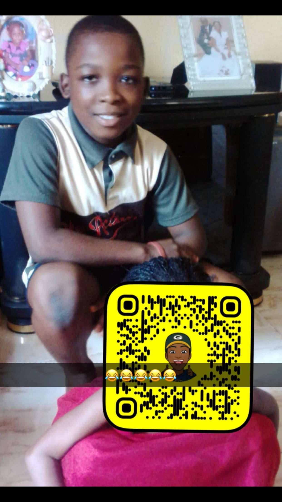

Oshun Ayomide Oluwapelumi
Dark Knight effect · Lagos State University of Science and Technology
Oshun Ayomide Oluwapelumi is a Computer Science student whose watchful mind and low temper make every simple situation feel like a scene from a thriller. Known across campus as "Paranoid Brother", "AY Biggie" he moves with a sharp eye, a guarded smile, and a sense of humor that turns suspicion into style.
At Lagos State University of Science and Technology, he studies systems and code by day, and every quiet corner feels a little too loud by night. His page has the right mix of bold confidence, dark style, and a hint of paranoia.

Focused on algorithms, systems, and the art of staying calm when everyone else thinks you're overreacting. The blend of paranoia and low temper gives him an edge in debugging problems before they happen.
"I don't always check the door twice, but when I do, it's because someone just blinked suspiciously."
"My low temper is like a hidden weapon — calm on the surface, but one wrong move and you'll wish you'd never asked."
Find him online, follow the energy, and remember: the best way to get a response is to be direct and a little careful.